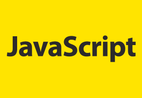
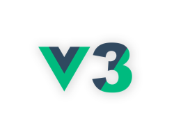

captain-pangyo의 다른 댓글.
실무에서 사용하는 Vue.js 프로젝트 구조
Vue.js 프로젝트 구조가 복잡해졌을 때의 폴더 구조는 어떻게 가져가는 것이 좋을까?

이벤트 버블링, 이벤트 캡처 그리고 이벤트 …
(기본) 이벤트 버블링, 이벤트 캡처링, 그리고 이벤트 위임까지 이벤트 전달 …
v-model의 동작 원리와 활용 방법
v-model 동작 원리. 한글(IME) 입력 처리. 실용적인 컴포넌트 설계와 활용

Vue 3, 기본 버전이 되다
22년 초에 일어난 Vue.js 진영의 큰 변화를 살펴봅니다. 라이브러리 기본 버전이 …
프런트엔드 개발자가 알아야하는 HTTP …
API 데이터 요청을 위해 꼭 알아야 하는 HTTP 프로토콜의 정의, HTTP Status …
야생화(cover) - 박효신
박효신 야생화 커버
자바스크립트 간단한 Test 코드 만들어보기
(중급) 자바스크립트 테스트를 이해하기 위해 간단한 테스트 코드와 테스트 함수 …
Vue.js 개발 생산성을 높여주는 도구 3가지
뷰로 개발할 때 반복적인 코드 작성을 줄이고 코드 리뷰를 편하게 해주는 도구 …